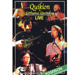

| Artist: | Quikion + Lithuma Qnombus |
| Title: | Quikion + Lithuma Qnombus Live |
| Label: | Poseidon PPS-001 |
| Length(s): | 84 minutes |
| Year(s) of release: | 2005 |
| Month of review: | [10/2007] |
| 1) | Toki No Mi | |
| 2) | Moon And A Bride | |
| 3) | Hallelujah!! | |
| 4) | Zawa Zawa | |
| 5) | Summertime | |
| 6) | Bulerias Of The Table | |
| 7) | Nightharp | |
| 8) | Iranian Boy | |
| 9) | Cha-ri-ne | |
| 10) | Spellbound | |
| 11) | Tali-la | |
| 12) | Heaven Knows | |
| 13) | Incomplete Polka |
Lithuma Qnombus (12.56)
| 1) | Ouma-ga Toki | |
| 2) | Briolage | |
| 3) | Concertina Blues |
The majority of songs aren't as long as the opener. Due to the instruments used there is a certain South-American flavour to the music, but the Japanese vocals leave no doubt to their origin. The style could be best described as folk, but there is a reason why the band is signed to Poseidon, since 'folk' doesn't fully cover it. Yukiko, although of a typically Asian demurity, is clearly the focal point of the band, being both vocalist and lyricist. When someone in the audience yells "wow, yeah!" the tries to maintain her straight face, but can't help a smile from breaking through.
The artwork includes pictures and names of all the instruments used. I can't remember seeing that done before with a band that uses a lot of ethnic instruments. It certainly helped me in writing this review.
Whereas the first set saw Quikion (Yukiko, Eiji, Emi) joined by Lithuma Qnombus (Genta, Shu), the second sees Lithuma Qnombus joined by Quikion. The sound of these tracks is less full, more contemplative. Yukiko's vocals sound less mesmerizing too, although I can't quite pinpoint how come. The chanting quality of Shu's vocal call evoke an association with Tibetan monks.